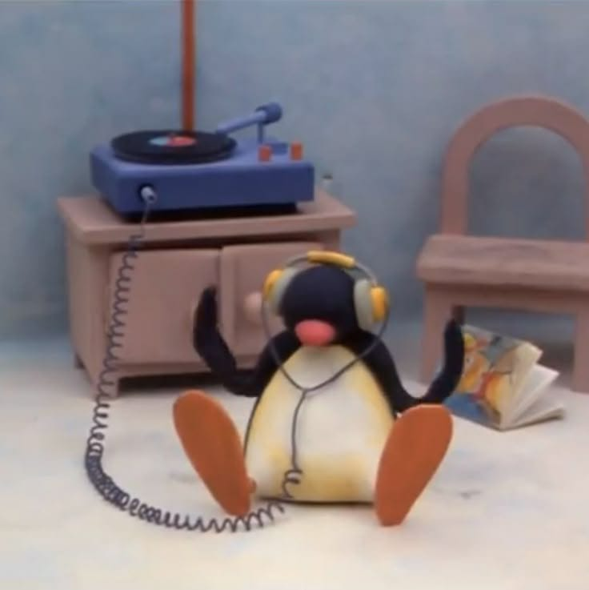

2. Escuchar música
En realidad me gusta escuchar música para hacer cualquier actividad. Tengo un gusto muy variado, cualquier canción que me guste la agrego a mi playlist sin importar el género que sea. Mis artistas favoritos son BTS, Cortis, Avicii y The Warning.
